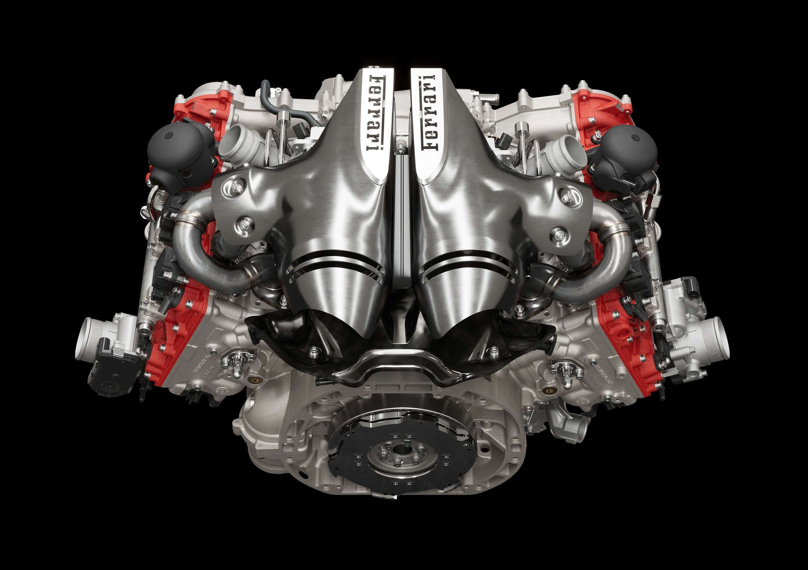
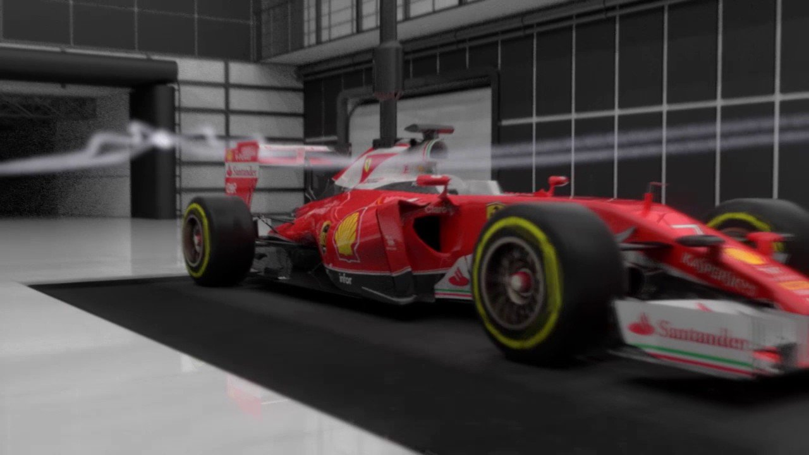
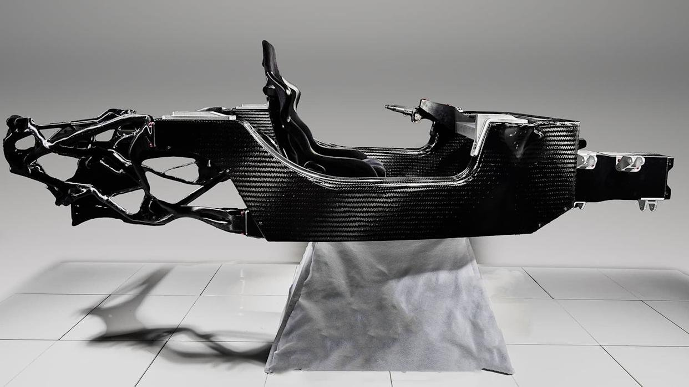
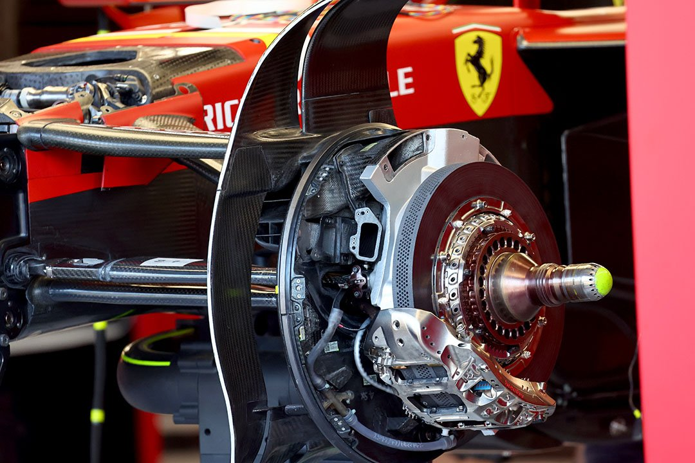

Technológia

Hibrid erőátvitel
A modern Ferrari F1-es autók 1.6 literes turbófeltöltős V6-os motort használnak, kiegészítve két elektromos motorral. Az MGU-K és MGU-H egységek együtt akár 1000 lóerő feletti teljesítményt biztosítanak. A motor fordulatszáma elérheti a percenkénti 15 000-et, miközben a hőhasznosítás hatásfoka meghaladja az 50%-ot — messze a legjobb bármely belső égésű motornál.

Szélcsatorna & CFD
Maranellóban egy élvonalbeli szélcsatorna és fejlett számítógépes áramlástani szimulációk segítik az aerodinamikai fejlesztést. Minden alkatrész ezernyi virtuális tesztcikluson megy át mielőtt pályára kerül. A leszorítóerő és a légellenállás egyensúlyának optimalizálása versenypályánként változik — Monaco-ban maximális leszorítóerő, Monzában minimális légellenállás a cél.

Karbonszálas váz
A Ferrari monokókkja karbonszálból készül, amely rendkívül könnyű és egyben erős. Az egész autó tömege mindössze 798 kg — a minimálisan előírt határérték. A karbonszál szilárdsága acélhoz mérhető, tömege azonban töredéke. A váz gyártása heteket vesz igénybe: a szálakat kézzel helyezik el, majd kemencében szilárdítják meg precízen szabályozott hőmérsékleten.

Fékezés & gumikezelés
A karbon-kerámia fékrendszer 300 km/h-ról kevesebb mint 3 másodperc alatt képes megállítani az autót, miközben a fékbetétek hőmérséklete az 1000°C-t is elérheti. A gumikezelés és a hőgazdálkodás kulcsfontosságú: a Pirelli gumik ideális működési hőmérséklete 80–110°C között van, amit a pilóta és a mérnökök folyamatosan monitoroznak.
Technológia kvíz
1. Hány köbcentiméteres a modern Ferrari F1-es motor?
2. Mekkora a modern F1-es autó maximális fordulatszáma?
3. Mennyi a Ferrari F1-es autó teljes tömege?
4. Hány G erő lép fel fékezéskor egy F1-es autóban?